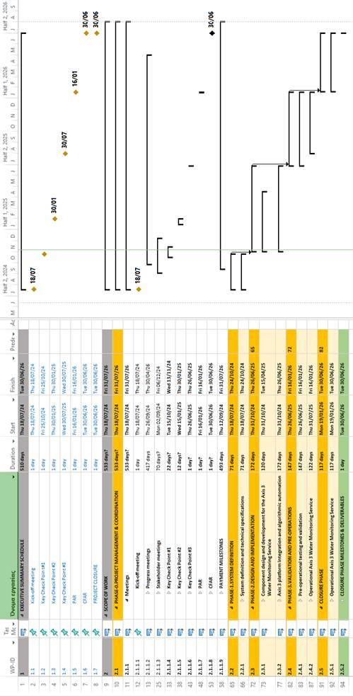
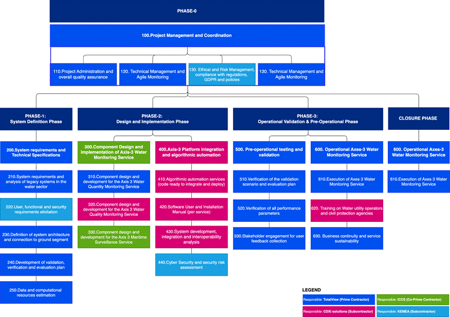
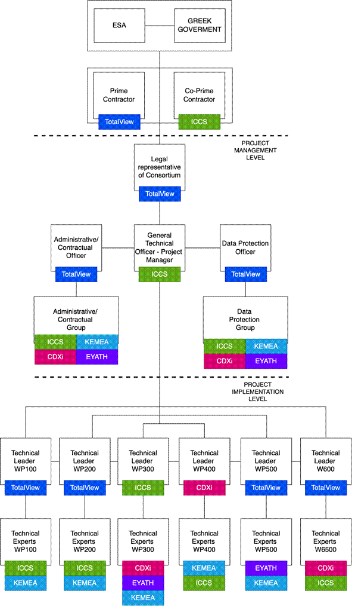

|
Deliverable: |
D-15 GNEO-PL-TTL-PM-1501 Project Implementation Plan |
||||||||
|
Document identification: |
GNEO-PL-TTL-PM-1501 |
||||||||
|
Submitted by: |
|
||||||||
|
In collaboration with: |
|
||||||||
|
ESA Contract No.: |
4000145363/24/NL/Ffi |
||||||||
|
ESA Reference: |
GNEO-SOW-ESA-PM-0011 |
||||||||
|
Project title: |
Greek National Satellite Space Project: Axis 3 Water Monitoring Service |
||||||||
|
Current Version: |
2.0 |
Status: |
Submitted for Approval |
||||||
|
Prepared by: |
George Keradinidis |
||||||||
|
Approved by: |
Vasiliki Giavi |
||||||||
|
|
ESA UNCLASSIFIED For ESA Official Use Only |
||||||||
Table of contents
a. Work Breakdown Structure of HELOISA
5. Quality Standards and Assurance
6. Resource Requirements, Roles and Responsibilities
a. Description of TotalView facilities used
b. Description of ICCS facilities used
c. Description of CDXi Solutions facilities
d. Description of KEMEA facilities used
e. Description of EYATH facilities used
f. Means of access to information resources
|
Version |
Date |
Contributors |
Remarks |
|
1.0 |
15/10/2024 |
TotalView |
Submitted for Approval |
|
2.0 |
29/01/2025 |
TotalView |
Updates, based on KCP#1 RIDs |
|
Deliverable id |
Name |
|
|
|
|
|
|
|
Acronym |
Name |
|
TLV |
TotalView |
|
ICS |
ICCS |
|
CDX |
CDXi |
|
EYA |
EYATH |
|
KEM |
KEMEA |
|
LEV |
Lever |
|
|
|
|
|
|
Schedule: Timeline for implementing each aspect of the project.
Implementation Strategy: Detailed plan for implementing project activities and deliverables.
Resource Requirements: Resources needed for implementation.
Roles and Responsibilities: Assignments of responsibilities for implementation tasks.
Facilities: List of partners facilities to be utilized in the project.
Execution Guidance: Provides a clear plan for executing project activities.
Resource Coordination: Ensures that resources are available and allocated appropriately.
Implementation Monitoring: Helps in tracking the implementation process.
Used to guide the execution of project activities, ensuring that all aspects of the project are implemented according to plan.
The Project duration is driven by the completion date as governed by the Greek component of the EU Recovery and Resilience Facility (RRF) with the CFAR being successfully completed by end June 2026.
Table 1: List of project milestones
|
Milestones |
Reference |
Time |
|
Milestones from Agency |
||
|
Project Kick-Off (KO) |
SoW - Section 4.2.3, table 1 SoW - Section 7, table 3 |
M0 |
|
Progress meetings (P1 - P11) |
SoW - Section 6.3.9, GNEO-SOW-99 |
Every 6 weeks |
|
Meetings with Stakeholders (MwS) |
SoW - Section 4.2, GNEO-SOW-21 |
As requested from ESA and HSC |
|
Key Check Point #1 (KCP#1) |
SoW - Section 4.2, GNEO-SOW-21 SoW - Section 4.2.3.1, GNEO-SOW-55 SoW - Section 7, table 3 |
M4 |
|
Key Check Point #2 (KCP#2) |
SoW - Section 4.2.3.2, GNEO-SOW-56 SoW - Section 7, table 3 |
M7 |
|
Key Check Point #3 (KCP#3) |
SoW - Section 4.2.3.3, GNEO-SOW-57 SoW - Section 7, table 3 |
M12 |
|
Preliminary Acceptance Review (PAR) |
SoW - Section 4.2, GNEO-SOW-21 SoW - Section 4.2.3.4, GNEO-SOW-58 SoW - Section 7, table 3 |
M18 |
|
Final Acceptance / CFAR Close-Out / Contract Closure |
SoW - Section 4.2.3.5, GNEO-SOW-60 SoW - Section 7, table 3 |
M24 |
|
Milestones from Prime Contractor |
||
|
Payment milestones |
Special conditions - section F.5 |
Following Project milestones (KCP#1-3, PAR, CFAR) and Advance Prepayment |
|
Milestones from subcontractors |
||
|
Payment milestones |
Special conditions - section F.5 |
Following Project milestones (KCP#1-3, PAR, CFAR) and Advance Prepayment |
Related to the project schedule requirements stemming from the SoW (e.g. GNEO-SOW-68), have been taken into account during the drafting of the project timeline.
As defined in GNEO-SOW-85, in addition to the overall project schedule, a further detailed Project schedule with minimum bi-weekly granularity tracking the progress of the activities, and showing the planning for the next reporting period, of all parts of the consortium, to be updated and presented at each Project Progress Meeting is monitored in a Microsoft Project file.

The Work breakdown structure is presented in the following table and also in the figure below it.
|
ID |
Tasks |
Leader |
Co-Leader |
|
100 |
Project Management and Coordination |
TotalView |
ICCS |
|
110 |
Project Administration and overall quality assurance |
TotalView |
ICCS |
|
120 |
Technical Management and agile monitoring |
TotalView |
ICCS |
|
130 |
Ethical and Risk Management, compliance with regulations, GDPR and policies |
KEMEA |
ICCS |
|
140 |
Coordination with Axis 1 and Axis 2 |
TotalView |
ICCS |
|
200 |
System definition and technical specifications |
TotalView |
ICCS |
|
210 |
System requirements and analysis of legacy systems in the water sector |
TotalView |
EYATH |
|
220 |
User, functional and security requirements elicitation |
KEMEA |
TotalView |
|
230 |
Definition of system architecture and connection to Governmental Hub |
TotalView |
ICCS |
|
240 |
Development of validation, verification and evaluation plan |
TotalView |
CDXi |
|
250 |
Data and computational resources estimation |
TotalView |
CDXi |
|
300 |
Component design and development for the Axis 3 Water Monitoring Service |
ICCS |
CDXi |
|
310 |
Component design and development for the Axis 3 Water Quantity Monitoring Service |
TotalView |
ICCS |
|
320 |
Component design and development for the Axis 3 Water Quality Monitoring Service |
CDXi |
EYATH |
|
330 |
Component design and development for the Axis 3 Maritime Surveillance Service |
ICCS |
KEMEA |
|
400 |
Axis 3 platform Integration and algorithmic automation |
CDXi |
ICCS |
|
410 |
Algorithmic automation services (code ready to integrate and deploy) |
CDXi |
ICCS |
|
420 |
Software User and Installation Manual (per service) |
CDXi |
ICCS |
|
430 |
System development, integration and interoperability analysis |
CDXi |
ICCS |
|
440 |
Cyber Security and security risk assessment |
KEMEA |
ICCS |
|
500 |
Pre-operational testing and validation |
TotalView |
EYATH/ KEMEA |
|
510 |
Verification of the validation scenario and evaluation plan |
TotalView |
EYATH/ KEMEA |
|
520 |
Verification of all performance parameters |
TotalView |
EYATH/ KEMEA |
|
530 |
Stakeholder engagement for user feedback collection |
TotalView |
EYATH/ KEMEA |
|
600 |
Operational Axis 3 Water Monitoring Service |
TotalView |
ICCS |
|
610 |
Execution of Axes 3 Water Monitoring Service |
TotalView |
ICCS |
|
620 |
Training on Water utility operators and civil protection agencies |
CDXi |
|
|
630 |
Business continuity and service sustainability |
TotalView |
CDXi |

Figure 2: WBS diagram of Project Heloisa. The colours refer to the leader of each WP and for each task inside each WP.
Below, for each WP, the Work Breakdown Description (WBD) table presents the objective of the WP, the required inputs, detailed subtasks description of the work to be executed, and the planned outputs.
|
WP100 - Project Management and Coordination PHASE: System Definition WP Manager: TotalView |
|
Objectives: ● Ensure effective project administration and overall quality assurance. ● Oversee technical management and agile monitoring. ● Manage ethical considerations, risk, compliance with regulations, GDPR. ● To achieve project milestones within the stipulated timeline Inputs: ● Statement of Work documents ● Project Charter and Objectives ● Regulatory Compliance Guidelines ● Stakeholder Requirements and Agreements ● Project Schedule and Milestones ● Risk Management Plan Tasks: 110: Project Administration and overall quality assurance ● Oversee all administrative activities related to project execution. ● Implement quality assurance protocols to ensure project deliverables meet specified standards. 120: Technical Management and agile monitoring ● Conduct technical management to ensure the project aligns with the technical requirements. ● Implement agile monitoring techniques to adapt and respond to project changes effectively. 130: Ethical and Risk Management, compliance with regulations, GDPR and policies ● Ensure compliance with ethical standards, GDPR, and relevant policies. ● Implement risk management strategies to identify, assess, and mitigate project risks. 140: Coordination with Axis 1 and Axis 2 ● Facilitate collaboration and communication with stakeholders from Axis 1 and Axis 2 projects. ● Collaborate with teams handling Thermal, SAR and Optical Space Segments ● Synchronize efforts to enhance project integration and performance Outputs: ● Project Management Plan (D-05) ● Risk Management Plan (D1.3) ● Compliance Reports and Documentation (e.g., GDPR compliance) ● Status and Progress Reports (D-06) ● Meeting Minutes and Coordination Reports (D-07) ● Action Item List (D-08) ● Document Status List (D-9) ● Project Schedule (D-13) ● Risk Registry (D-14) ● PA/QA Plan (D-20)
|
|
WP200 - System definition and technical specifications PHASE: System Definition WP Manager: TotalView |
|
Objectives: ● Define the HELOISA project's system requirements and technical specifications, ensuring alignment with end-user needs, budgetary constraints, and regulatory standards to establish a solid foundation for the design and implementation phases. Inputs: ● Statement of Work (SoW): Detailed project scope, milestones, and task descriptions ● End User Requirements: Specific needs and expectations gathered from consultations facilitated by ESA and the Greek government ● Technical Standards and Guidelines: Regulatory and compliance requirements for the water monitoring system ● Legacy System Analysis: Assessment of existing water monitoring systems and integration requirements ● Data Sources: Identification of data to be used from Axis 1.1, Axis 1.2, Axis 2, and external sources Tasks: 210 System requirements and analysis of legacy systems in the water sector: ● Conduct a thorough analysis of existing systems to identify compatibility and integration requirements 220 User, functional and security requirements elicitation: ● Gather and define the user, functional, and security requirements through stakeholder consultations and requirements elicitation sessions 230 Definition of system architecture and connection to Governmental Hub: ● Design the system architecture, ensuring seamless integration with the Governmental Hub and existing infrastructure. 240 Development of validation, verification and evaluation plan: ● Create a comprehensive plan outlining testing procedures, validation methods, and evaluation criteria to ensure system reliability and performance 250 Data and computational resources estimation: ● Assess and estimate the computational power, memory, and data resources required for the HELOISA project, ensuring alignment with project constraints Outputs: ● System Requirements Specification (SRS): Detailed documentation of the system requirements derived from user needs and legacy system analysis. (D-21) ● Preliminary Architectural Design Document: Functional model and design of the system architecture. (D-23, D-24, D-25) ● Validation, Verification, and Evaluation Plan: Comprehensive plan detailing the methods and criteria for system testing and validation. (D-17) ● Resource Estimation Report: Detailed estimation of the computational and data resources required for the system. (D-14, D-20)
|
|
WP300 - Component design and development for the Axis 3 Water Mon. Service PHASE: Design and Implementation WP Manager: ICCS |
|
Objectives: ● Design and develop the relevant products of the three components for the Axis 3 Water Monitoring Service Inputs: ● Satellite data from Axes 1.1, 1.2, 2, as well as 3rd party data (e.g., Copernicus, Landsat etc.) ● Public DL and any relevant models (e.g., Foundation models for Sentinel data) ● Public benchmark datasets for DL ● State-of-the-art software and analytical tools for remote sensing data operations and analysis ● Algorithms derived from state-of-the-art literature in the relevant field of water EO-based monitoring as stated in the Algorithm Theoretical Baseline Definition (ATBD) Tasks: 310: Water Quantity Monitoring ● Mapping of water extent changes relevant to rapid and slow geohazards such as floods and coastal erosion ● Mapping of long-term (e.g., hydroperiod) and current state of inland water extent 320: Water Quality Monitoring ● Marine ocean colour and temperature ● Extreme event detection such as algal blooms, muddy water/industrial waste, oil spills and water quality parameters, such as surface temperature, turbidity, total suspended matter and chlorophyll-a for inland waters 330: Maritime Surveillance ● Detection and monitoring of anthropogenic targets such as vessels and infrastructure ● Detection of marine pollutants such as oil spills and debris (e.g., plastics) in the marine environment Outputs: ● Water quality, quantity and maritime surveillance products and test data ● Metadata for corresponding water quality, quantity and maritime surveillance products ● Code for Axis 1, 2 and 3rd party data acquisition, (pre)processing and analysis ● Algorithms and models ● Progress reports and deliverables with comprehensive technical and non-technical details on workflows, methodologies and processes ● Peer-reviewed scientific publications in high impact factor journals
|
|
WP400 - Axis 3 platform Integration and algorithmic automation PHASE: Design and Implementation WP Manager: CDXi |
|
Objectives: ● Develop and integrate algorithmic automation services for water quality, quantity, and maritime surveillance products. ● Establish REST API services to streamline data pipelines for water quality, quantity, and maritime surveillance. ● Implement a scalable architecture to support the integration of Axis 3 platform services. ● Create user and installation manuals for software services developed under Axis 3. ● Conduct system development, integration, and interoperability analysis with existing governmental hubs. ● Perform cyber security assessments and risk analysis for the developed system. Inputs: ● Water quality, quantity and maritime surveillance products (WP300) ● Water quality, quantity and maritime surveillance product metadata (WP300) ● Code for Axis 1, 2 and 3rd party data acquisition, (pre)processing and analysis (WP300) ● Algorithms and models (WP300) ● Software user and security requirements (WP200) ● Preliminary Architectural Design Document (WP200) Tasks: 410: Algorithmic automation services (code ready to integrate and deploy) ● Creation of REST API services for streamlining the Water quality, quantity and maritime surveillance pipelines (WP300) ● Implementation of architecture to ensure service scalability ● Implementation of Water Quality, Quantity, and Maritime Surveillance pipelines based on a microservice architecture to ensure scalability and portability ● Implementation of internal database ● Engineering Performance Budget 420: Software User and Installation Manual (per service) ● Generation of user and system manuals for installation, services, overall system and guidelines 430: System development, integration and interoperability analysis ● Implementation of system architecture ● Consuming data from Water Quality, Quantity, and Maritime Surveillance services ● Development of a UI for visualisation of test products ● Interoperability analysis and test performance with Governmental Hub 440: Cyber Security and security risk assessment ● Conduct thorough cyber security assessment focusing on data integrity risks during algorithm execution. ● Identify potential cyber security risks related to data malformation in training and inference stages of AI/ML algorithms. ● Evaluate impact of data malformation on accuracy metrics using confusion matrices. ● Provide detailed reports on security risks and mitigation strategies specific to Water Quality, Quantity, and Maritime Surveillance data. Outputs: ● REST API services for water quality, quantity and maritime surveillance pipelines ● System integrating and visualising data from REST API services ● System user/installation manual and service guide ● Software detailed design document ● Training webinars |
|
WP500 - Pre-operational testing and validation PHASE: Validation and Pre-Operations WP Manager: TotalView |
|
Objectives: ● Generate and validate test data for software verification and validation. ● Validate software against user requirements on the platform hardware. ● Demonstrate performance of the service running on the platform. ● Define and implement operation preparation activities, including training and dress rehearsals. ● Execute the Axis 3 Service for 3 months before handover to Agency and Greek Government. ● Update operational documentation following the pre-operational phase. Inputs: ● Test data for software verification and validation ● User requirements for software validation ● Platform hardware specifications ● Operational documentation Tasks: 510 Verification of the Validation Scenario and Evaluation Plan ● Ensure that the validation scenario accurately reflects real-world conditions and that the evaluation plan effectively measures the performance of the system. ● This task involves meticulous examination of the validation scenario and evaluation plan to guarantee their alignment with project objectives and stakeholder expectations. 520 Verification of all performance parameters ● Verify that all performance parameters meet predefined standards and requirements. ● This task involves conducting comprehensive assessments and tests to ensure that the system performs optimally across various metrics, including speed, accuracy, and reliability. 530 Stakeholder engagement for user feedback collection ● Engage with stakeholders to gather valuable feedback on system usability and effectiveness. ● This task involves actively involving stakeholders in the validation process to capture their perspectives and insights, which can be crucial for refining the system and enhancing user satisfaction. Outputs: ● Software Verification Reports summarizing test results and validation outcomes. ● Preliminary Acceptance Review (PAR) Deliverables. ● Final Acceptance/CFAR Close-Out Deliverables ● Contract Closure Documentation. |
|
WP600 - Operational Axis 3 Water Monitoring Service PHASE: Validation and Pre-Operations WP Manager: TotalView |
|
Objectives: ● Test run and operational execution of the Axis 3 Water Monitoring Service. ● Training of Operators and end-users. Inputs: ● Project Schedule and Milestones ● Risk Registry ● KCP#3 Data Package Tasks: 610: Execution of Axes 3 Water Monitoring Service ● Perform dress-rehearsal during the preoperational phase ● Execute the Axis 3 Service before the handover to Agency 620: Training on Water utility operators and civil protection agencies ● Preparing training curriculum and training material with test use case scenarios for training sessions on operators and end users ● Implementing training sessions to operators and end-users 630: Business continuity and service sustainability ● Implementation of a Business Continuity and a Disaster Recovery Plan ● Verification of fully successful commissioning and validation of the System on the Governmental Hub in accordance with plans and procedures established by the Contractor of Governmental Hub. ● Update of risk assessment and of Risk Registry with operational phase related risks Outputs: ● Training material with test use cases (CFAR Data Package-CFAR) ● Updated Risk Assessment and Risk registry (D-14-CFAR) ● Verification and validation Report (D-18-CFAR) ● Business Continuity and a Disaster Recovery Plan (D-34-Contract Closure) ● Service Sustainability Plan (D-34-Contract Closure) ● Contract Closure documents (D-34-Contract Closure) ● Update operational documentation SUM and SOP (D-34-Contract Closure) |
High-Resolution Satellite Data Procurement: Acquiring very high-resolution satellite data will be essential for accurate water and maritime monitoring in this project. With the launch of new satellites planned next year, its crucial to engage data providers/ministry early to secure access, finalize any necessary agreements, and address considerations around licensing, and delivery timelines. Starting these arrangements early will ensure continuous access to the imagery required for training AI models and carrying out analysis.
Advanced Sensors and Data Integration Equipment: Specialized sensors, including hyperspectral, thermal, and advanced optical, are necessary to capture detailed water quality data, and their availability may be limited or require customization. Early planning is needed to source data from these sensors and to coordinate with technical teams for integration into the monitoring workflow. Establishing calibration protocols and configuring the sensors for satellite data integration will also be essential to ensure data quality and compatibility.
AI Model Development and Training Datasets: Developing AI models to analyze SAR, optical, and hyperspectral data for water quality and quantity monitoring requires extensive time for model training and dataset preparation. This involves not only identifying data sources but also securing GPU resources and other computing infrastructure. To optimize these processes, the team will prototype initial models, gather diverse labeled datasets, and plan for iterative refinement based on validation results.
In-Situ Measurement Devices and Calibration Systems: In-situ measurement devices are critical for ground truthing and validating remotely sensed water quality data. These devices need to be sourced or secured and calibrated to match the specifications required for the projects accuracy goals. Early arrangements for these devices, setting up calibration systems, and establishing clear data integration workflows will ensure the project can continuously validate its remote sensing outputs.
Software Development and Testing Environment Setup: Setting up a scalable, secure software environment to support high-resolution image processing is crucial, especially given the computational demands of AI algorithms. The environment must be capable of handling large datasets and high-performance processing, so initiating securing of computing resources or cloud services early on will be essential. This will allow the team to establish robust sandbox environments and minimize setup delays for development and testing.
Custom Image Processing Algorithms and Libraries: Developing specialized algorithms for tasks like pollutant detection and algal bloom classification requires research, iterative testing, and validation, particularly when using very high-resolution datasets. By starting algorithm research and development early and involving subject-matter experts, the project can ensure that custom code is rigorously tested and tailored to meet the specific monitoring needs of water bodies.
Compliance and Licensing for AI and Remote Sensing Software: AI model development and image processing workflows are subject to regulatory and licensing requirements, particularly within the EU. To avoid potential legal complications, project leads should consult legal teams and begin securing software licenses and reviewing compliance frameworks like GDPR. Proactively addressing these requirements will help avoid interruptions and ensure compliance across the project.
Data Storage and Management Infrastructure: Managing high volumes of SAR, optical, and hyperspectral data demands a robust storage solution that can support processing and retrieval at scale. Its critical to assess storage requirements early, secure required space and set up redundancy measures to ensure data integrity. Securing these resources upfront will enable seamless data handling as the project scales.
External dependencies that could impact the project timeline include:
Satellite Data Availability and Timeliness: The project relies heavily on regular access to high-resolution satellite data, including Sentinel-1 and Sentinel-2 imagery, as well as upcoming satellites set to launch next year. Any delays in satellite launches or interruptions in data provision from external sources, such as the European Space Agency or commercial providers, could impact data continuity, model training, and analysis accuracy. Establishing contingency plans with providers will be crucial to maintaining steady data access.
In-Situ Data from Partner Agencies: In-situ data, essential for calibrating and validating satellite observations, will depend on collaboration with local environmental monitoring agencies. Consistent, high-quality in-situ data, such as water quality measurements, pollutant levels, quantity measurements and AIS data, must be available to ensure the AI models accuracy and reliability. Coordinating data-sharing agreements, defining data quality standards, and synchronizing data collection schedules with these agencies will be necessary to support effective validation efforts.
Regulatory Compliance and Data Licensing Requirements: The projects use of remote sensing data and AI analysis tools might be subject to various regulatory and licensing requirements, potentially including security, GDPR for data privacy and EU environmental data standards. Additionally, potentially proprietary data sources or third-party software may have licensing constraints that could impact the availability and usage of certain datasets or tools. Staying updated on relevant regulations will be essential to ensure that all project activities remain compliant and uninterrupted.
Access to Specialized Processing and Computing Infrastructure: Given the high computational requirements for processing and analyzing large volumes of satellite imagery, access to cloud resources or high-performance computing clusters from providers like ESAs DIAS platforms could be important. Any limitations in service availability, costs, or bandwidth restrictions from these external providers could slow down processing or limit analysis capabilities. Early planning for cloud contracts and monitoring infrastructure requirements will be necessary to meet computational demands throughout the project.
Technical Support and Maintenance from Software Vendors: The projects reliance on various specialized software platforms, such as potential AI training libraries, creates a dependency on external vendors for technical support, software updates, and bug fixes. Any disruptions in support or delays in critical updates could affect workflow efficiency or introduce technical issues. Regular monitoring and libraries conflict precaution design, will help ensure timely access to assistance and updates as needed.
Collaboration with Research and Development Partners: The projects success in AI model development and algorithm optimization may also depend on collaborations with research institutions or technical experts who contribute domain-specific insights or methodological expertise. Timely input from these partners will be vital for refining AI models and achieving accurate monitoring capabilities. Aligning project timelines and coordinating review meetings with these external partners will help integrate their expertise effectively into the projects deliverables.
In this project, several procedures will be rigorously applied to ensure the reliability, accuracy, and integrity of data processing, model outputs, and deliverables. Adhering to project requirements, a structured Quality Assurance (QA) framework will be implemented. This framework will include documented quality criteria and metrics for each deliverable, covering all phases from data acquisition to final analysis.
A comprehensive PA and QA Plan will define these standards in detail, specifying procedures for data validation, model accuracy testing, and documentation management.
Key QA activities will involve regular data quality checks, especially for remotely sensed data, to address issues like noise reduction, spatial accuracy, and cloud interference in optical images. Additionally, systematic validation protocols will be implemented, including in-situ calibration checks and cross-referencing satellite observations with ground-truth data to confirm accuracy. AI and machine learning outputs will undergo extensive validation, incorporating statistical accuracy metrics and model performance benchmarks, as well as routine re-training to account for environmental variability. Peer reviews and external audits will further reinforce quality control, ensuring that methodologies and results adhere to best practices. QA activities will also include traceability measures, where all data processing steps, assumptions, and transformations are thoroughly documented to maintain a clear audit trail. To safeguard data integrity, secure storage solutions will be implemented, with backup protocols to prevent data loss. This quality-driven approach, supported by automated testing, routine internal reviews, and continuous improvement mechanisms, will ensure that all project outputs meet or exceed required quality thresholds, providing stakeholders with reliable and actionable insights.
All the necessary work in terms of technical, administrative and financial management for the successful implementation of the project will be carried out by the Consortium as described below. The figure below shows the structure/organisation of the consortium and the hierarchical responsibilities of all participating members within the Consortium alongside with the interfaces with the Agency. As shown in the following figure, there are two distinct levels within the proposed organisational system, i.e. the project management level and the project implementation level. Each level ensures the efficient and timely implementation of the related activities. Specifically:
● The project management level consists of the Legal Representative, the Project Manager, the Administrative and Contractual Officer with the associated Groups, and the Data protection Officer Manager with the associated Group. The Project Management Team communicates and collaborates with the Contracting Authority (ESA, Greek Government) and collaborates with external authorities as well as with the internal project implementation level.
● The project implementation level consists of six (6) groups, each one dedicated to a WP of the project. Each of these groups is managed by a separate group leader, e.g. Technical Leader WP100, WP200 etc. Each of these leaders communicates and collaborates with the technical experts in their respective working groups and the Project Manager. The Project Implementation Team will benefit from additional resources made available by Consortium members.
○ At the strategic level, the Project Implementation Team will receive project management and quality assurance services from the Project Management Team. In addition to quality monitoring services, the Project Management Team will collaborate with the Project Implementation Team on risk management matters.
○ On an operational level, the Project Implementation Team will assist the Project Management Team with any issues that arise in the implementation of the project, providing expert support in technical and scientific matters, as well as administrative support on an ad-hoc basis.

Figure 3: Organisational Breakdown Structure of HELOISA. The diagram depicts the hierarchical responsibilities within the Consortium and the interfaces with the Agency.
TotalView is located in Peristeri, West Attica. Since core business of the company requires handling multi-TB data, equipment is designed and implemented to support full 10G speed, across all network components including:
network cards
switches
data center grade cabling (Cat 6a) and connectors
Additionally, storage is designed to host hundreds of TB in a multilayered architecture (cold - warm - hot), with extra backup procedures.
Finally, the processing components are optimized (GPU, memory, cooling, NVMe) to support full scale Earth Observation procedures.
TotalView premises are designed to support military grade security procedures of the National Industrial Security Certificate (EKBA) by the Ministry of National Defense, for National-EU-NATO Secrets.
ICCS is equipped with a Dell Power Edge R910, with 32 CPUs x Intel(R) Xeon(R) CPU X7560 @ 2.27GHz, 600GB memory and 7TB disk space. The ESXi-6.5.0-20170104001-standard (VMware, Inc.) virtualization environment is installed in order to provide a flexible virtual machine environment. Moreover, ICCS owns and will provide to the project high-end Linux based servers (Intel-Core i7 4770 - 1150/3.4GHz/8MB, RAM: 2 x DDR3 8GB 1600MHz, Hard disk: 2 x 2TB HDD 3.5") so as to facilitate the establishment of the communication network of the foreseen system.
The following server is available and can be dedicated to the project implementation:
Table 2 CDXis Server dedicated to the project implementation
|
Chassis |
Be Quiet Dark Base 900 Black Full-Tower Chassis |
|
PSU |
Be Quiet Dark POWER PRO 11 BN64580 Plus Platinum PSU |
|
CPU |
INTEL CPU Core i9-10920X |
|
CPU Cooling |
Corsair Hydro Series H60 (2018) |
|
Mainboard |
ASUS Prime X299-A II |
|
RAM |
128GB (=4x 32Gb) Kingston KF432C16BB/32 DDR4 3200MHz |
|
SSD |
2x 1TB Samsung 970 EVO PLUS PCIe NVMe - M.2 MZ-V7S1T0BW |
|
HDD |
2x 4TB TOSHIBA X300 4TB/SATA III/3.5''/7.2K/256MB |
|
GPU |
MSI GeForce RTX 4090 VENTUS 3X 24G OC 24Gb GDDR6 |
● Physical Infrastructure: A modern Datacentre, with specialised infrastructure cooling, access control and 40 KVA UPS, that hosts all the physical servers, storage and backup systems. All systems, and power lines are redundant, providing failover capabilities. Power is delivered to the Datacentre, via twin separate electricity lies from the central power plant. The space is also monitored by an environmental control system, which, among others, includes heat and moisture detectors, providing control and alerting the responsible personnel of the IT division.
● Network and connectivity: The network consists of a redundant networking system, utilising Fiber Optical Cabling where necessary and UTP cat-6 at the rest of the infrastructure. All active switching and routing equipment are set up in pairs, delivering redundancy and resilience. State of the art and award-winning systems (IDS, IPS, etc.) are utilized to maximize efficiency, speed and security. The whole network is using Fortinets technology from end to end, providing centralised management, monitoring and alerting. Also, a SIEM system as a service is used to provide 365/24/7 management of potentials threats. The connectivity to the internet is done by two independent ISP connections of 400MBps each, that each one of them has two distinct entrance points to the building and the Datacentre, using different media fibreoptic cables and microwave link. Monitored VPN access is available for remote administration and partners access to specific parts of the infrastructure on demand. Furthermore, a hands-on system is present, strictly for the admins of the Datacentre. Different networks do exist for management, for access, two Demilitarized Zones, and a backup network.
● Servers, storage etc.: The whole capacity of the Datacentre, sums up to 400 Intel Xeon Cores, 2 Tb ram, 50 Tb of SSD Storage, and 10 P4 Tesla 8Gb GPU cores, with the appropriate backup system. The provisioning of the VMs, is done via the Hyper-V 2019 Cluster system. Also, some individual servers do exist, providing an isolated environment for testing and for experimentation. Mission critical VMs, are placed on the active-active cluster system, providing high availability and redundancy. Also, the VOIP telephone system is hosted on the high availability cluster, providing teleworking capabilities via VPN. Some critical VMs are also hosted on external Datacentres with strict SLAs, providing availability and protection. All systems are covered by active support contracts and the critical systems from 4-hour mission critical support.
● KEMEA Operational Center Simulation Infrastructure: The Operational Center Simulation Infrastructure (OCSI) of KEMEA is a test environment and a fully operating legacy system simulator, which supports system development, integration, validation and testing from the mockup scale, up to demo, pilot and preoperational level. OCSI of KEMEA is based on ArcGIS Enterprise platform combined with MS SQLServer RDBMS, which is hosted in dedicated servers in KEMEA premises. OCSI covers practically any type of GIS functionality and spatiotemporal data management, supporting a wide range of powerful data science tools, workflow automation and data visualization as well. The OCSI platform supports standards from several Geospatial Standards Organizations including OGC, ISO/TC211, IHO as well as a variety of other open IT standards related to metadata, communication protocols, data sharing, open architecture implementation and can be integrated with other platforms, services, devices and systems. Up to now, the implemented applications and services of the OCSI include web-services, web-apps and desktop software tools for natural hazard simulation and modelling, meteorological data processing, knowledge bases and geodatabases relative to Critical Infrastructure Protection, Fire and Flood management DSS, Border Control Management Applications. OCSI of KEMEA serves interested parties as a fully functional facility to test, validate and demonstrate relevant new applications, services and integrated solutions.
EYATH SA will use the following facilities for each stage of the work offered:
● Sampling Campaigns:
For the sampling campaigns at the Polyphytos reservoir EYATH SA will utilise boats and field equipment necessary for the consistent and systematic collection of water samples (e.g. gps locators, samplers). Moreover, portable testing equipment for on-site water quality assessment of various parameters (e.g. pH, turbidity, dissolved oxygen, temperature, Sacchi disk) will be available.
● Laboratory analyses:
The TDWTP laboratory is fully equipped to handle both physicochemical and microbiological analyses. It operates under ISO 17025 standards and its advanced analytical instrumentation along with experienced personnel adept in handling complex surface water analyses, ensures high-quality testing of the samples collected from various positions along the Polyphytos Reservoir.
● Validation of results:
For validating the sampling water quality analysis results, EYATH SA will employ dedicated PCs to compare them with the surface water quality of large aquifers as obtained by standard -based on satellite tools- EYATH SA procedures.
Data, Information and Services are disseminated in an open access policy. The Copernicus Contributing Missions can be accessed with a subscription. Data, such as DEM10 which needs special rights, will be provided with ESA team help.
Sentinel data are instead freely accessible through the Copernicus Dataspace Ecosystem. In addition, other Copernicus products that may be of potential use are provided freely via the Copernicus services, such as CLMS, CMEMS, CEMS, C3S and CAMS. Furthermore, Landsat data are freely accessible through the USGS EarthExplorer. Finally, additional in situ data can be also accessed through the Copernicus in situ component, as well as EYATHs sampling campaign(s).
For the purposes of the Tender, the following test facilities will be used in order to verify and validate the successful provision of the Water Monitoring Services of Axis-3.
● The reservoir of Polyphytos, located in the Prefecture of West Macedonia, in the Regional Unit of Kozani, in Greece will be used as a testing ground for verifying and validating the water quality service for inland waters. The reservoir will be used for the development of the necessary in-situ measurements along with other available data related to water quality.
● As already mentioned above the TDWTP Quality Control Laboratory facilities of EYATH will be used for the analysis of water samples collected from several spots of the Polyfytos reservoir within the framework of the sampling campaigns of the project. All the necessary physicochemical and biological quality parameters for the validation of the monitoring services, will be analysed there.
Further testing areas, will be examined and updated here, later in the project.
During the implementation of the Water Monitoring Service element of Axis 3, the following requirements need to be taken into account:
● As part of Phase-1 activities, the consortium estimated the resources needed from the Axis 3 Platform (Governmental Hub) in terms of computing power, memory, etc. and present and discussed the necessary requirements with the contractor of the G-Hub, facilitated by ESA and the Greek government. [GNEO-SOW-13] Detailed Questionnaires were submitted to G-Hub contractor to document requirements.
● As part of the Phase-2 activity, the consortium shall confirm the resource needs from the Axis 3 Platform (Governmental Hub) and its compatibility with the HW selected by the Axis 3 Platform contractor (together with ESA and the Greek government), at KCP#2.[GNEO-SOW-15]
● From KCP#2 and as long as needed by the SW development, the verification shall be achieved using a reference test environment as will be provided by the Governmental Hub contractor via ESA and the Greek government. [GNEO-SOW-47]
● Between KCP#3 and PAR, the final verification and the SW qualification will be performed on the Axis 3 platform. [GNEO-SOW-47]
● Between the PAR and CFAR, the final SW validation and acceptance will be performed on the Governmental Hub installed in its final location selected by the Greek government [GNEO-SOW-47]
[End of document]